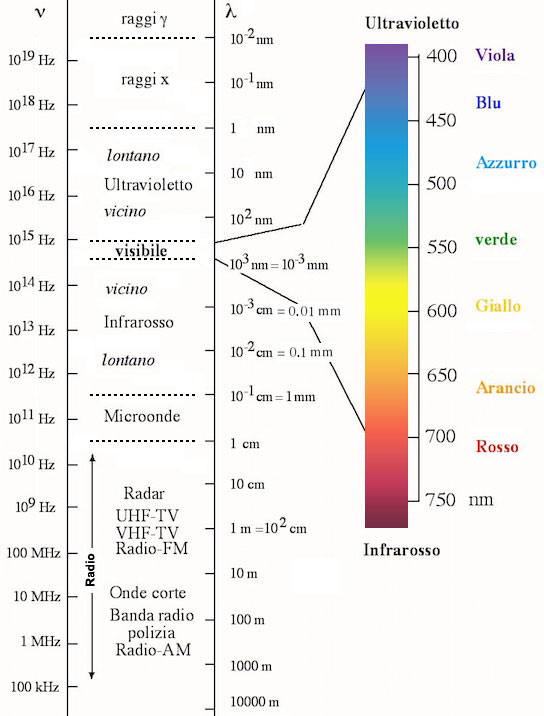
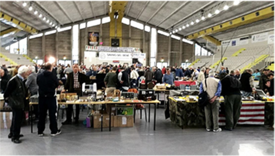
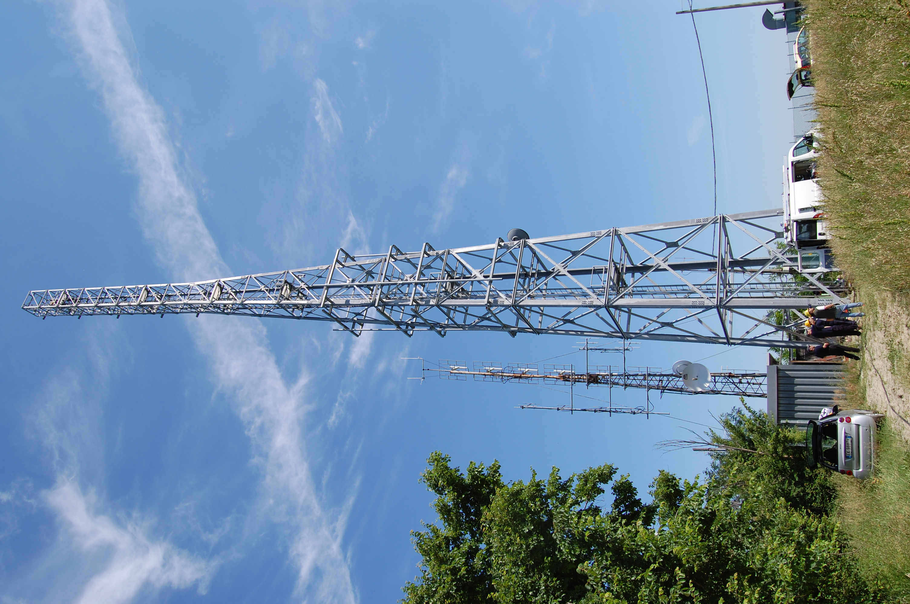

Spesso le tecnologie radio sono ritenute superate da telefonia,
televisione ed Internet; eppure hanno i propri pregi e campi di utilizzo,
sopravvivono, prosperano e raccolgono gruppi di appassionati;
tali appassionati possono ascoltare contenuti,
comunicare con altri utenti ed operare stazioni amatoriali per creare loro stessi
contenuti radio. Tuttavia una radio ha come fondamentale caratteristica la
comunicazione sincrona, che si rivela uno svantaggio in certe situazioni.
E qui entra in gioco una controparte asincrona: "Long Light", un social media
creato nel 2024 per diffondere la passione della radioamatoria e connettere chi la
condivide. Il sito accetta chiunque, anche chi non possiede
ancora un apparato radiofonico. Questa guida ha lo scopo di chiarire i maggiori dubbi
che un utente potrebbe avere al riguardo.
Domande e risposte sulla radiomatoria
Cosa vuol dire Long Light?
Letteralmente "Luce Lunga", fa riferimento al fatto che le frequenze radio sono
radiazioni luminose con un'elevata lunghezza d'onda.

Le frequenze usate da radioamatori sono solitamente indicate in MegaHertz (MHz),
ossia un milione di segnali al secondo.
Cosa spinge a diventare radioamatori?
L'archetipo del radioamatore raccoglie essenzialmente due tipi di persone:
l'operatore che ama i collegamenti a lunga distanza ed il tecnico che studia la
tecnologia fondamento dei sistemi di comunicazione. Il mondo dei radioamatori
racchiude al suo interno tecnologie evolute come quelle militari e di uso comune
come quelle dei cellulari; il fascino riguarda principalmente garantire collegamenti
dove le tecnologie offerte al pubblico non riescono.
Il radioamatore ha un gergo tecnico strutturato?
Si utilizza un sistema di identificazione internazionale chiamato
Codice Q:
un elenco di espressioni composte da 3 lettere con una Q iniziale, che esprimono
diverse situazioni in cui si potrebbe trovare l'operatore.
Esempi:
QRZ
Qualcun'altro in linea?
QSY
Cambio frequenza.
QRT
Chiudo la comunicazione.
Si tratta di un hobby costoso?
La dismissione di attrezzatura da parte degli operatori telefonici ha immesso nel
mercato dell'usato apparecchiature e materiale a basso costo ed un radioamatore
esperto potrebbe ulteriormente ridurre i costi costruiendo gli apparati che utilizza.
In base al tipo di frequenze adoperate un sistema radio completo costerebbe da poche
centinaia a diverse migliaia di euro, ma un utente medio con esigenze limitate
difficilmente si ritroverebbe a pagare oltre 100-150 euro.

Una convention organizzata dall'ARI.
I radioamatori le frequentano spesso per i mercatini di scambio.
Le frequenze sono molto utilizzate?
Contrariamente a quanto si pensa, al giorno d'oggi lo spettro radiofonico si
presenta tutt'altro che spoglio: ci sono diversi servizi attivi, soprattutto
nelle frequenze molto alte (VHF e
specialmente UHF); il solo modem
Wi-Fi oggi utilizza frequenze sui 2,4GHz e sui 5GHz, senza parlare dei
"trasferimenti digitali" che spesso operano sui 24GHz e oltre.
L'evoluzione consiste nel progressivo abbandono dei segnali di tipo analogico in
favore del digitale.
Quale frequenza scegliere per comunicare
I radioamatori devono operare solo nei range di frequenze a loro assegnati,
anche se molto vicini a range privati (satelliti, televisione, stazioni radio
professionali, altri radioamatori ecc.) o addirittura proibiti.
Esistono frequenze pubbliche, ma solo un radioamatore patentato possiede
frequenze ad uso esclusivo.
I comici del "Trio Medusa" iniziarono la loro carriera con un'emittente radiofonica pirata,
trasmettendo i propri sketch sopra frequenze private altrui; in seguito passarono a metodi legali.
Come si ottiene una propria frequenza?
Per essere radioamatore bisogna sostenere un esame ministeriale di radiotecnica e
normative sull'utilizzo delle frequenze. Solo dopo aver ottenuto la patente diviene
possibile richiedere la licenza per ottenere il nominativo internazionale di
Operatore di Stazione Radioamatoriale.

Il ponte ripetitore di Monte Cavallo, Cesena, costruito dal team di
radioamatori IR4UBA e tuttora usato per telecomunicazioni - non solo radioamatoriali.
In seguito, componenti della squadra aiutarono la Protezione Civile nel brillamento di un
ordigno esplosivo.
La figura del radiamatore viene valutata?
Normalmente i radioamatori vengono chiamati ad operare assieme alla Protezione Civile
in quanto sono gli unici in grado di intervenire nell'immediatezza e con risorse
disponibili in caso di disastro.